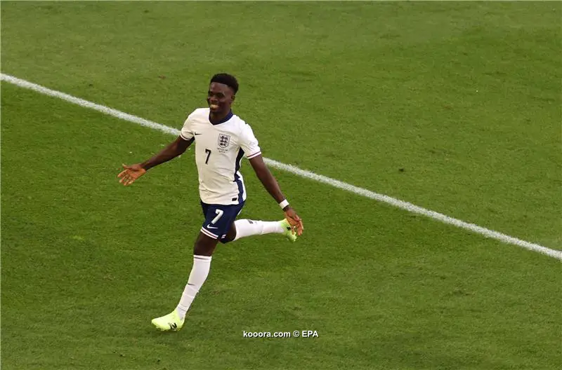
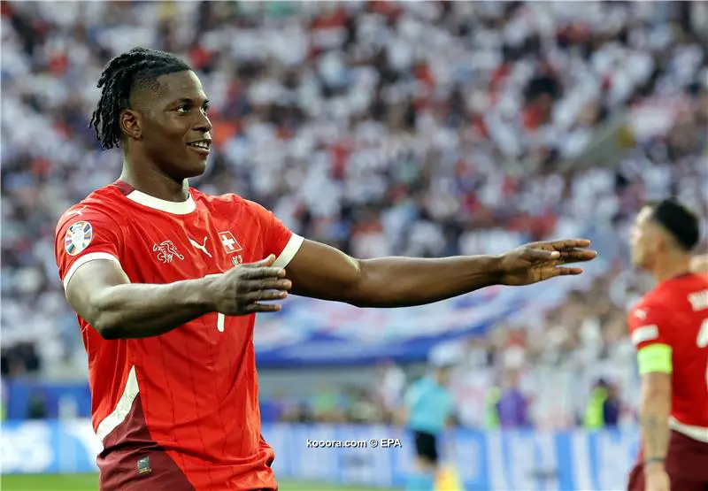
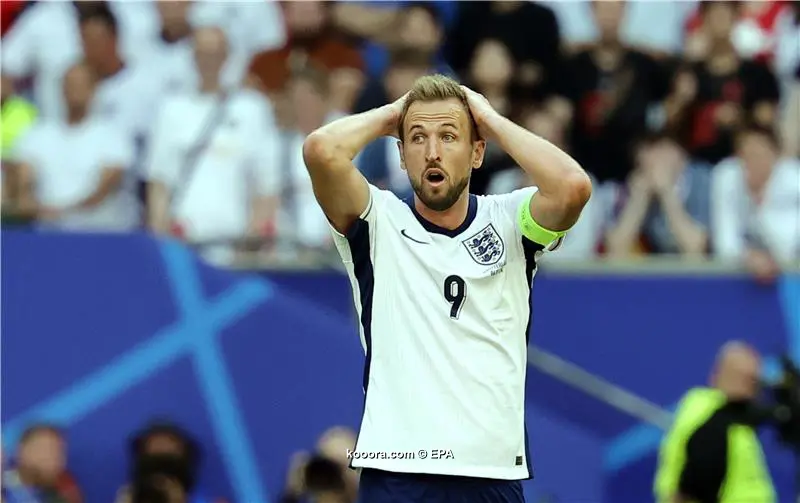
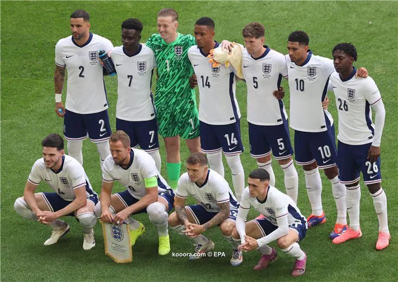
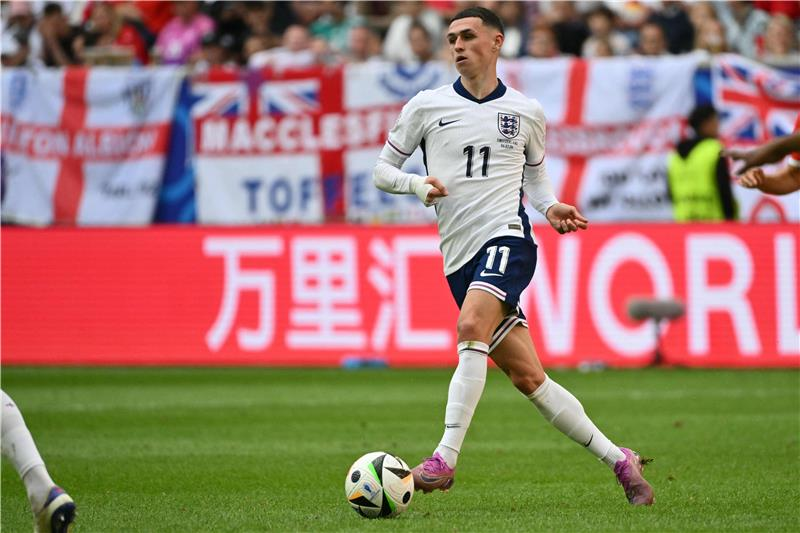
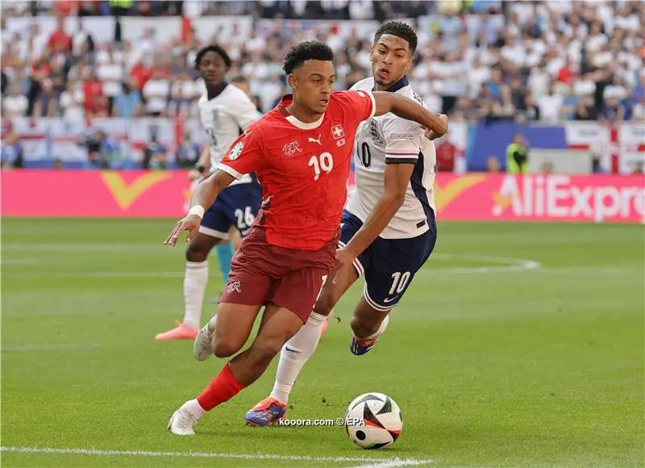
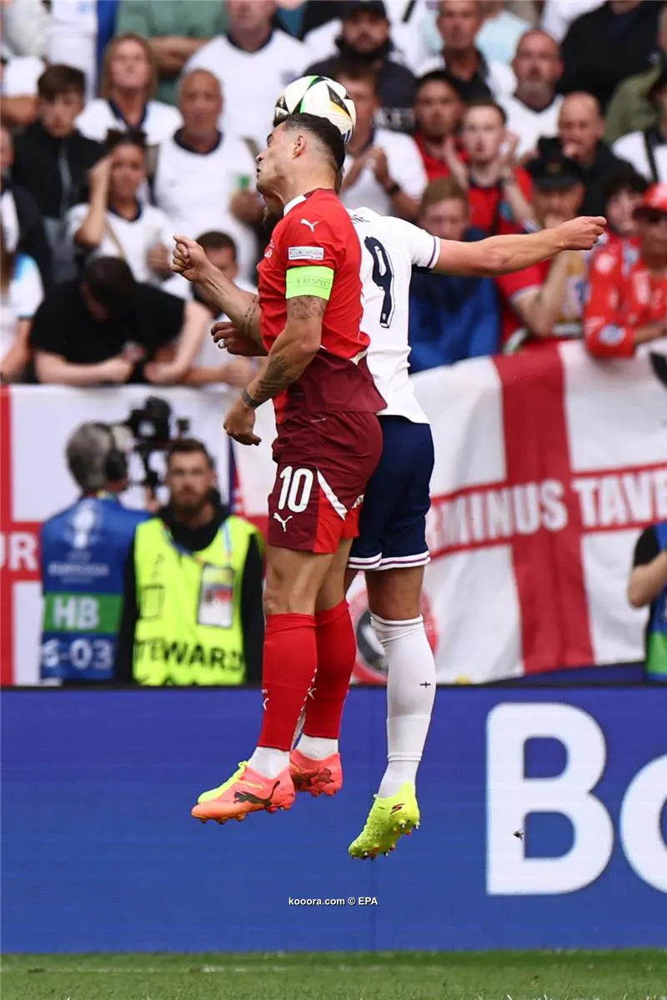
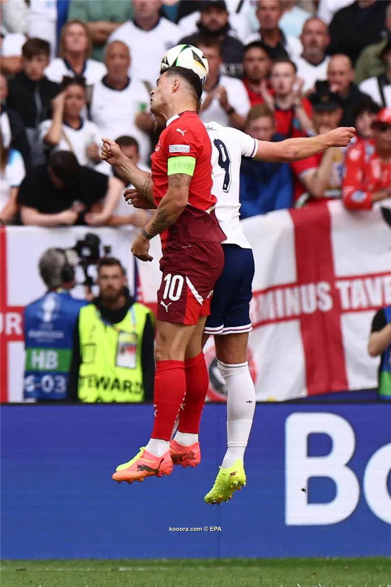
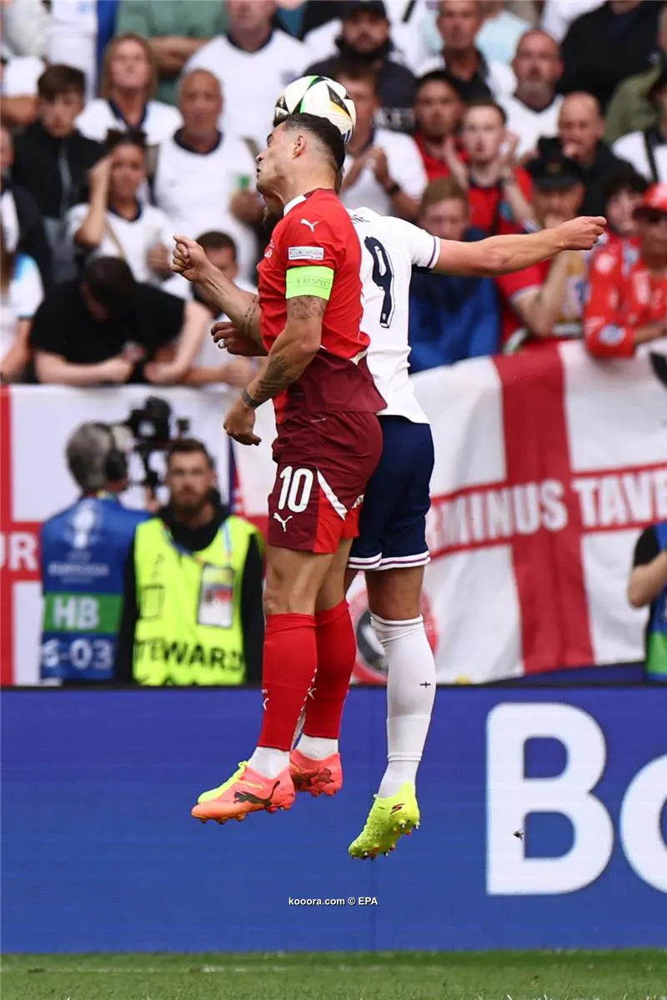

Watch the penalty shootout match between England and Switzerland England advances to the semi-finals of the European Championship 2024
Highlight
Photos From the Match







Match events
As expected, the Swiss team started in a more organized manner and took the offensive initiative. Ruben Vargas started from the left side in an attempt to send crosses to the brilliant Swiss striker, Briel Embolo.
As the first quarter-hour passed, the danger of the English team became apparent thanks to the movements of Arsenal star and Three Lions winger Bukayo Saka, who passed more than one cross from the ground, which was cleared by the Swiss defense from inside the penalty area.
The first half ended without any dangerous opportunity for the goalscorers due to the extreme caution with which the two teams’ coaches, Murat Yakin and Gareth Southgate, entered the match.
At the beginning of the second half, Embolo, the Swiss striker, rose to a cross and headed it towards the England goal, but it was caught by goalkeeper Jordan Pickford.
The English team was exaggerated in its reserve and calm, and the result was that it received the first goal from an organized attack, which was the first in the match in general.
In the 75th minute, Fabian Schar passed the ball to Dan Ndoye, who passed the ball with a ground cross on which striker Embolo pounced, scoring the first goal.
The response was very quick from the English team, as the ball was hit to the Gunners star, Bukayo Saka, on the right side. He penetrated into the field and fired a rocket ball into the net of Yann Sommer, the Swiss national team goalkeeper, announcing the England equalizer.
After that, the Three Lions team intensified their attacks and pressure on the Swiss goal, but the Swiss and Inter Italian goalkeeper, Sommer, successfully dealt with the English crosses, so that the match ended in a draw (1-1) and went to two extra halves.
In the first extra half, the goals were again devoid of danger until the 102nd minute, which witnessed a shot by Jude Bellingham from inside the penalty area, but his ball went into the hands of goalkeeper Sommer.
The Swiss team returned to control in the second extra half, which witnessed the entry of the team's star and veteran winger, Xherdan Shaqiri.
In the 117th minute, Shaqiri almost scored one of his beautiful and historic goals with the Swiss national team when he shot a direct corner kick into the goal, but it bounced off the crossbar and Switzerland wasted the opportunity to decide the match by knockout.
Shaqiri returned in the 119th minute and fired a shot that was blocked with great difficulty by Pickford, the England goalkeeper.
These were the last dangerous chances in the match, which ended after extra time in a tie (1-1), so the match went to penalty kicks.
 
